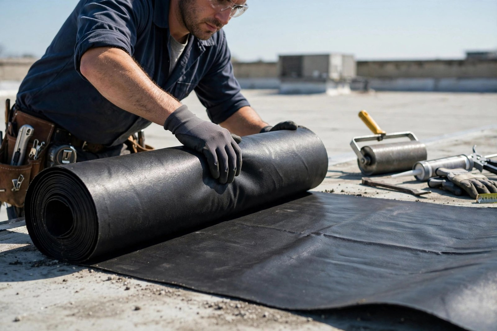

Membrane élastomère
Installation de membrane élastomère soudée sur toits plats — étanche, durable et résistante aux intempéries.
Repentigny, Québec · Couvreurs résidentiels et commerciaux
Membrane élastomère, asphalte et gravier, toit blanc et toit vert — installation et réparation par une équipe locale de Repentigny, travail honnête et devis clair.
Ce que nous faisons
Installation de membrane élastomère soudée sur toits plats — étanche, durable et résistante aux intempéries.
Toiture multicouche d'asphalte et gravier — la solution classique et éprouvée pour les toits plats.
Toitures réfléchissantes à membrane blanche — réduisez les îlots de chaleur et vos coûts de climatisation.
Toitures végétalisées écologiques — isolation naturelle et esthétique pour votre bâtiment.
Refaire votre toiture au complet — on retire l'ancien revêtement et on installe du neuf, selon les règles de l'art.
Fuites, bardeaux manquants, solins endommagés — on répare vite pour protéger votre bâtiment.

Pourquoi nous choisir
On croit aux choses simples : un devis juste, des matériaux de qualité et un chantier propre. Vous savez exactement ce qui sera fait — et pourquoi.
Nos chantiers
Ils en parlent
Bon à savoir
Appelez-nous au (450) 704-0884 — on se déplace pour évaluer votre toiture et vous remettre une soumission claire et détaillée.
Bien installée, une membrane élastomère soudée dure environ 25 ans et plus. C'est le choix le plus durable pour les toits plats.
Non — on travaille autant les toits plats (membrane, asphalte et gravier, toit blanc, toit vert) que les toits en pente (réfection et réparation).
Oui — on localise la source de l'infiltration et on la répare, avec une solution durable pour protéger votre bâtiment.
Venez nous voir